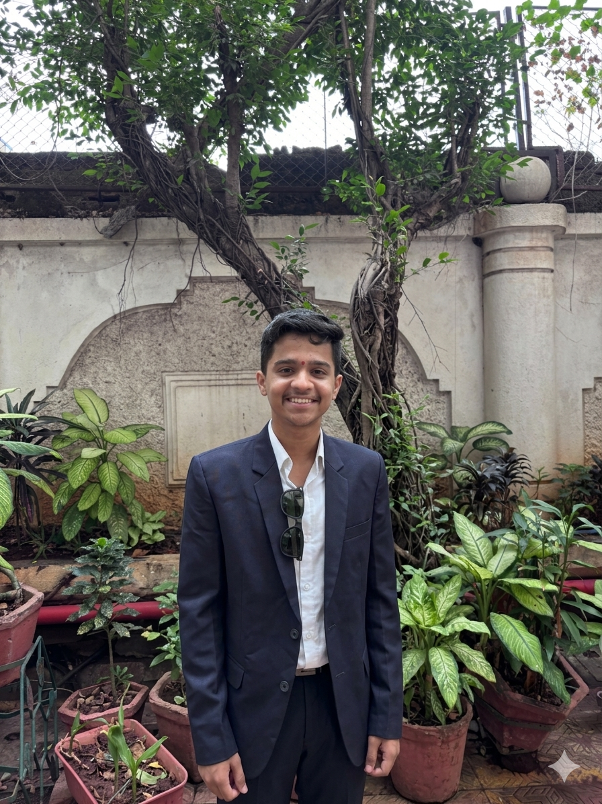
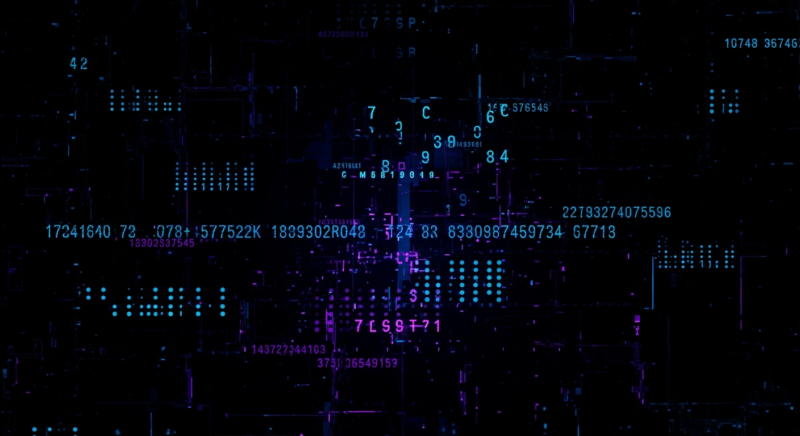

Engineering Future Realities PREM BARASKAR
Information Technology Student | AI/ML Researcher | Full-Stack Developer | Cybersecurity Enthusiast | Technology Leader. Based in Mumbai, Maharashtra, India.

The Architect Behind The Systems
A polymathic convergence of artificial intelligence, cryptography, rapid full-stack engineering, and community leadership.
The Production Builder & CTO
Full-stack developer and Chief Technology Officer who architects and deploys high-concurrency, mission-critical platforms. From municipal festival web architectures serving thousands of visitors for Mumbai Central Cha Raja and Sahyadri Krida Mandal to terminal-native visual shaders in Python and C.
The AI Researcher
Author of 8+ peer-reviewed papers spanning emotion-adaptive LLMs (Inderscience), quantum digital signatures (Q-Sentinel), post-quantum cryptography, and hand landmark ASL recognition.
The Cyber Defender
DeepCytes Cyber Labs UK Fellowship alum, Cisco Certified, and AICTE Ethical Hacking Fellow. Experienced in penetration testing, Katapayadi cryptography, and post-quantum security.
Academic Excellence
9.845/10.00 cumulative CGPA at Shah & Anchor Kutchhi Engineering College with back-to-back 10.00 SGPA semesters. Global Rank 1 in the Heartfulness Essay Event and Olympiad Gold Medalist.
Published Author
Author of the forthcoming book "After all we’re here Only Once!?" (Pothi.com, July 2026) and technical columnist for SAKEC Bytes exploring AI biology, Studio Ghibli aesthetics, and KolibriOS.
Research Papers & Patent Portfolio
Bridging the theoretical frontiers of AI emotional synthesis, quantum-statistical cryptography, and deep steganographic integrity.
MemoryBridge: An AI-Based Conversational System for Emotionally Adaptive Interaction with Deceased Loved Ones Using Personal Data Modalities
An advanced voice and emotional interaction framework synthesizing multi-modal memories, real-time emotion detection (DistilRoBERTa), vector semantics (FAISS & Sentence Transformers), voice cloning via Coqui XTTS v2, and OpenGL 3D avatar visualization. Preserves sensitive personal data privacy with entirely local offline inference powered by Ollama.
HealthCrypt Nexus
Unified Hospital, Network Security & Cryptographic Platform
Integrating priority queue hospital operations, continuous TCP network vulnerability scanning, and Katapayadi cryptographic orchestration with SHA-256 RBAC. Prior Art Search Report prepared by Ideas2IPR.
After all we’re here Only Once!?
Published via Pothi.com
An introspective examination of human finitude, purpose, technology, and existential curiosity through poetic reflections and philosophical essays.
SAKEC Bytes Columns (2025–2026)
- 01 Biology’s Most Sacred Rule Is Getting a Rewrite
- 02 When Code Learns to Dream: AI & Studio Ghibli
- 03 The New Alchemy: AI & Yamanaka Factors
- 04 KolibriOS: OS on a Floppy Disk
Chief Technology Officer & Engineering Roles
Delivering high-performance digital platforms for millions of cultural attendees and contributing to top research institutes.
Chief Technology Officer — Mitram Solutions
2026 – Present | Mumbai, Maharashtra, India
Lead the technology vision, software architecture, and delivery of high-traffic web solutions for community mandals, cultural events, NGOs, and digital organizations. Delivered 6 client websites end-to-end spanning UI/UX design, modern responsive development, automated deployment, and cloud infrastructure hosting.
Live Client Ecosystem
Curated 250 structured English speech sentences; coordinated audio recordings from 5 speakers with research-grade metadata validation for speech AI models.
Performed security assessments, penetration testing exercises, and vulnerability analysis on simulated enterprise environments.
Conducted threat analysis, attack surface vulnerability assessments, and incident response studies collaborating with international security researchers.
Engineered full-stack applications utilizing Django, React, SQL databases, and secure RESTful APIs with automated test suites.
Studied and implemented network security configurations, firewall topologies, traffic anomaly filters, and zero-trust protocol designs.
Explored predictive machine learning pipelines, exploratory data analysis, feature engineering, and neural evaluation with scikit-learn, TensorFlow, and Pandas.
Engineered Artifacts & Systems
A collection of custom systems combining machine learning, terminal art, real-time computer vision, and secure network orchestrations.

MemoryBridge
2026Research-grade voice interaction system combining LLMs, semantic memory, emotion detection, multilingual TTS, and 3D avatar visualization; implements privacy-preserving local inference with Ollama.

LawLens-X
2026Autonomous contract analysis system combining deterministic pattern detection with LLM reasoning; generates risk scores, negotiation suggestions, and counterparty scenario simulations.

HealthCrypt Nexus
2026Unified hospital management, TCP network security scanning, and Katapayadi cryptography under a single orchestration platform with granular RBAC and SHA-256 authentication.
ASL Recognition System
2025–2026Real-time American Sign Language A–Z recognition using CNN classification and MediaPipe hand tracking; serves as the empirical experimental foundation for the Sign Language research paper.

NeonGlyph
2026Terminal-native ASCII/Braille image and video renderer with glitch, decay, and memory shaders; features real-time webcam rendering and custom .nglyph session recording and replay.

IntelliCare
2025Hospital information system leveraging priority queues, BFS graph traversal, and linked lists; scaled to Flask/MySQL architecture with OPD/IPD allocation and real-time operational dashboard.
Education & Performance
Rigorous coursework, mathematical precision, and continuous scholastic distinction.
Shah And Anchor Kutchhi Engineering College
B.Tech in Information Technology
August 2024 – May 2028 | Mumbai, India
DG Ruparel College of Arts, Science and Commerce
HSC in Computer Science
June 2022 – May 2024 | Mumbai, India
Computer Science specialization with excellence in electronics, algorithm analysis, and advanced mathematics.
Don Bosco High School
SSC Board
June 2019 – May 2022 | Mumbai, India
Scholastic and athletic honors: Beatrice Memorial Award, Taekwondo District Gold, and State-Level Art Rank 1.
Competitive Engineering
High-pressure coding sprints, multi-agent builds, and national-level design hackathons.
Smart India Hackathon (SIH) 2024
Government of India, Ministry of Education
Shortlisted at the internal college level for national SIH participation following rigorous screening on architecture viability and social impact.
CodeFusion 2K26
National Hackathon by CodeVerse
Ranked in the Top 55 nationally; participated in the 36-hour continuous offline grand finale at Echelon Institute of Technology, Faridabad.
AVISHKAAR Season 3 (2026)
EcoTech — Sustainability Platform
Selected for the national physical round presenting EcoTech, a software platform focused on sustainability metrics and community-driven ecological engagement.
Leadership & Service
Empowering teams, mentoring younger minds, and guiding student affairs.
Head of Information Technology
Sankalp Sarthi Foundation | Jun 2024 – Present
Manage complete digital operations, technical initiatives, social media infrastructure, and tech support for educational outreach across underprivileged areas. Official web portal provided free of charge by Mitram Solutions.
Class Representative
SAKEC, Mumbai | Oct 2024 – Present
Elected to represent 60+ undergraduate engineering students. Act as chief liaison between faculty heads and students; coordinated departmental guest lectures, workshops, and technical seminars.
Student Volunteer
Agastya International Foundation | Nov 2025
Conducted hands-on STEM outreach workshops, interactive science demonstrations, and educational activities for underprivileged school students in Mumbai.
Honors, Medals & Scholarships
National nominations, global literary triumphs, athletic championships, and academic distinctions.
-
✦
Global Rank 1: Heartfulness Essay Event 2025 (Heartfulness Education Trust, Shri Ram Chandra Mission & The Commonwealth).
-
✦
Top-7 Nominee: Green Student Award 2026 – Vanalok (Contributions to environmental sustainability).
-
✦
Student Excellence Award 2026: ZSkillUp Education, Saksham Bharat & FTPO India (academics, innovation, and leadership).
-
✦
2nd Place: Marathi Poetry Writing Contest (SAKEC).
-
✦
2nd Place: Marathi Prose Writing Contest (SAKEC).
-
✦
2nd Place: Code In The Dark (Speed blind coding competition).
-
✦
1st Place: Quizzie Quest (Inter-college technical quiz).
-
✦
Beatrice Memorial Award – Don Bosco High School.
-
✦
Mrs. Novella Misquitta Scholarship – Highest Marathi Score.
-
✦
Prof. Vijaylaxmi Parikh Award – Highest Hindi Score.
-
✦
Y.N. Bhatkande Scholarship & Green Champ Award.
-
✦
Gold Medal: 33rd Mumbai District Taekwondo Championship.
-
✦
Rank 1: International Social Studies Olympiad & State Level Art Rank 1.
-
✦
Dr. Homi Bhabha Balvaidnyanik Exam – Distinction.
Skills & Knowledge Matrix
Extracted directly from technical foundations and verified across development, research, and deployment.
Languages
AI / Machine Learning
Web / Backend
Databases & Tools
Security & Research
Core Domains
Certifications & Memberships
Rigorous IIT NPTEL elite badges, corporate cybersecurity credentials, and engineering society affiliations.
NPTEL Principles of Modern CDMA/MIMO/OFDM Wireless Communications
NPTEL Management Information System
NPTEL German-I
Python Programming with Red Hat (AD141-RHA)
Artificial Intelligence for All
Quantum Machine Learning Fundamentals
Ethical Hacking Virtual Internship
Python Full Stack Developer
Cisco Cybersecurity
Tata Cybersecurity Analyst Simulation
Ecosystem & Societies
Active member contributing to collegiate technical clubs, literary societies, and premier national engineering institutes.
- Institution of Engineers India (IEI)
- IUCEE (Indo Universal Collaboration for Eng. Education)
- GDG On Campus SAKEC (Google Developer Groups)
- Kalavrund – SAKEC's Artist Club
- Sambodhi – SAKEC's Writers Club
Let’s Engineer Something Extraordinary
Whether you are discussing AI research collaborations, enterprise web architecture, keynote technical speaking, or leadership roles, my inbox is always open.
Download Verified Resume
Access the complete three-page official curriculum vitae detailing academic SGPA, journal citations, patent numbers, and client deliverables.
Download Official Resume (PDF)